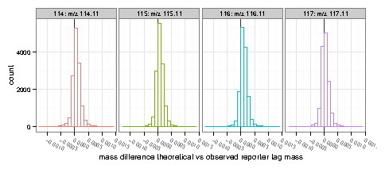
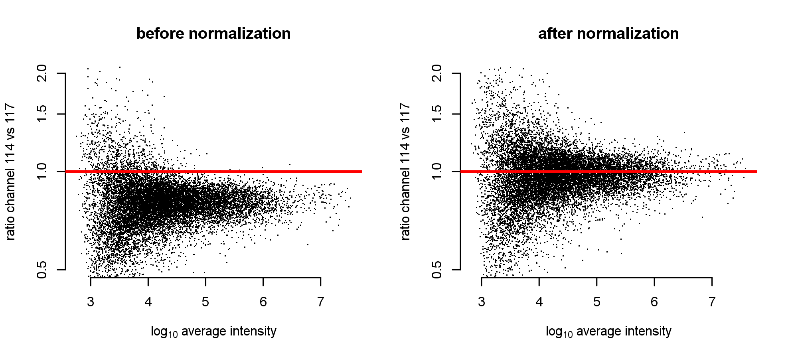
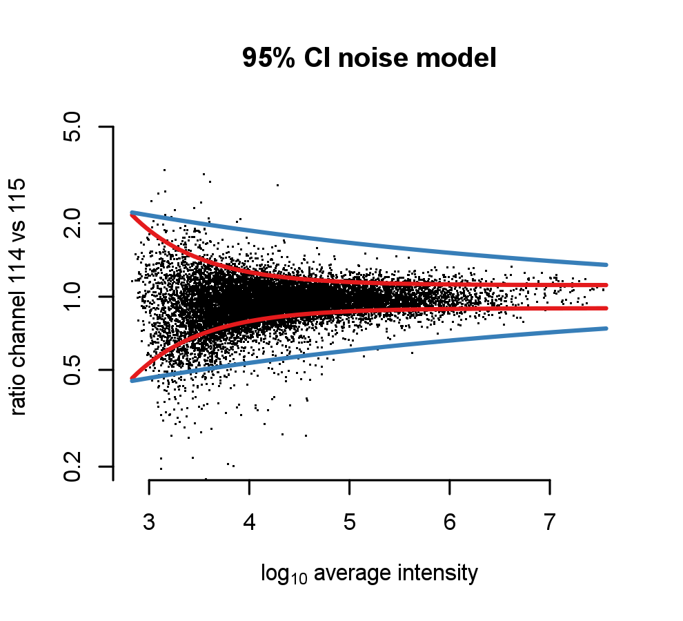
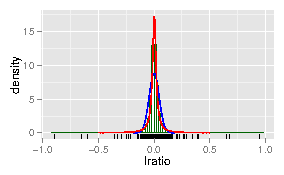
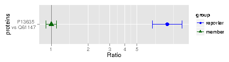

Isobar Vignette - iTRAQ and TMT Analysis
Isobar Vignette - iTRAQ and TMT Analysis
Florian P. Breitwieser, Jacques Colinge
Contents
1 Introduction
2 Loading data
2.1 ibspiked test samples
2.2 Protein information and grouping in ProteinGroup
2.3 MSnbase integration
3 Data Analysis
3.1 Reporter mass precision
3.2 Normalization and isotope impurity correction
3.3 Fitting a noise model
3.4 Protein and peptide ratio calculation
3.5 Protein ratio distribution and selection
3.6 Detection of proteins with no specific peptides
4 Report generation
A File formats
A.1 ID CSV file format
A.2 IBSpectra CSV file format
B properties.R for report generation
C Dependencies
C.1 LATEX and PGF/TikZ
C.2 Perl
D Session Information
1 Introduction
The
isobar package is designed as an extensible and
interactive environment for data analysis and exploration of data
produced by Mass Spectrometry analysis of proteins and peptides
labelled with isobaric tags, such as iTRAQ and TMT.
isobar
implements the theory presented in Breitwieser et al., Journal of
Proteome Research 2011.
isobar allows analyzing iTRAQ 4plex and 8plex, and TMT
2plex and 6plex experiments representing them as
IBSpectra
objects. The respective classes are
iTRAQ4plexSpectra,
iTRAQ8plexSpectra,
TMT2plexSpectra, and
TMT6plexSpectra.
The first thing you need to do is load the package.
R> library(isobar) ## load the isobar package
2 Loading data
isobar can read identifications and quantifications from
tab-separated and MGF files. Perl scripts are supplied to generate a
tab-separated version from the vendor formats of Mascot and Phenyx,
see appendix
C. The format is simple and
described in appendix
A. Experimental support for
the mzIdentML format within R is also available - please contact the
mantainer in case of problems.
- ID.CSV
- tab-separated file containing peptide-spectra matches and
spectrum meta-information such as retention time, m/z and charge.
Generated by parser scripts.
- MGF
- contains peak lists from which quantitative
information on reporter tags are extracted. Must be centroided.
- IBSPECTRA.CSV
- tab-separated file containing the same columns as
ID.CSV plus quantitative information extracted from MGF
file - that means the reporter tag masses and intensities as
additional columns.
readIBSpectra is the primary function to generate a
IBSpectra object. The first argument is one of
iTRAQ4plexSpectra,
iTRAQ8plexSpectra,
TMT2plexSpectra and
TMT6plexSpectra and denotes the tag
type and therefore class.
R> ## generating IBSpectra object from ID.CSV and MGF
R> ib <- readIBSpectra("iTRAQ4plexSpectra",list.files(pattern=".id.csv"),
list.files(pattern=".mgf"))
R> ## write in tabular IBSPECTRA.CSV format to file
R> write.table(as.data.frame(ib),sep="\t",row.names=F,
file="myexperiment.ibspectra.csv")
R> ## generate from saved IBSPECTRA.CSV - MGF does not have to be supplied
R> ib.2 <- readIBSpectra("iTRAQ4plexSpectra","myexperiment.ibspectra.csv")
In case the MGF file is very big, it can be advanteguous to generate a
smaller version containing only meta- and quantitative information
before import in
R. On Linux, the tool
grep is
readily available.
egrep '^[A-Z]|^1[12][0-9]\.' BIG.mgf > SMALL.mgf
2.1 ibspiked test samples
The examples presented are based on the dataset
ibspiked_set1 which has been designed to test
isobar's functionality and searched against the Swissprot
human database with Mascot and Phenyx.
ibspiked_set1 is an
iTRAQ 4-plex data set comprised of a complex background (albumin- and
IgG-depleted human plasma) and spiked proteins. MS analysis was
performed in ThermoFisher Scientific LTQ Orbitrap HCD instrument with
2D shotgun peptide separation (see original paper for more
details). The samples used for each iTRAQ channel are as follows:
- Depleted human plasma background (>150 protein detected);
- Spiked-in proteins with the following ratios
- CERU_HUMAN (P00450) at concentrations 1:1:1:1;
- CERU_RAT (P13635) at concentrations 1:2:5:10;
- CERU_MOUSE (Q61147) at concentrations 10:5:2:1.
A second data set with ratios 1:10:50:100 is available as
ibspiked_set2 from
http://bininformatics.cemm.oeaw.ac.at/isobar.
The Ceruplasmins have been selected as the share peptides. Hereafter,
we load the data pacakage and the ceru protein IDs are identified via
the
protein.g function, which provides a mean to retrieve
data from
ProteinGroup objects.
ProteinGroup is a
slot of
IBSpectra objects and contains informations on proteins
and their grouping. See
2.2.
R> data(ibspiked_set1)
R> ceru.human <- protein.g(proteinGroup(ibspiked_set1),"CERU_HUMAN")
R> ceru.rat <- protein.g(proteinGroup(ibspiked_set1),"CERU_RAT")
R> ceru.mouse <- protein.g(proteinGroup(ibspiked_set1),"CERU_MOUSE")
R> ceru.proteins <- c(ceru.human,ceru.rat,ceru.mouse)
2.2 Protein information and grouping in ProteinGroup
When an
ibspectra.csv is read, protein are grouped to
identify proteins which have unique peptides. By default, only
peptides with unique peptides are grouped.
The algorithm to infer protein groups works as follows:
- Group proteins together which have been seen with exactly the
same peptides (indistinguishableProteins) - these are
the protein.g identifiers.
- Create protein groups (proteinGroupTable):
- Define proteins with specific peptides as reporters
(reporterProteins)
- Get proteins which are contained 1 by
reporterProteins and group them below.
- Create protein groups for proteins without specific peptides as
above.
2.3 MSnbase integration
MSnbase by Laurent Gatto provides data manipulation and
processing methods for MS-based proteomics data. It provides import,
representation and analysis of raw MS data stored in
mzXML,
mzML and
mzData using the
mzR package and
centroided and un-centroided
MGF peak lists. It
allows to use and preprocess raw data whereas
isobar
requires centroided peak lists. In the future, the
isobar
class
IBSpectra might be based on or replaced by
MSnbase's class
MSnSet. For now, methods for
coercion are implemented:
R> as(ibspectra,"MSnSet")
R> as(msnset,"IBSpectra")
3 Data Analysis
3.1 Reporter mass precision
The distribution of observed masses from the reporter tags can be used
to visualize the precision of the MS setup on the fragment level and
used to set the correct window for isolation.
The expected masses of the reporter tags are in the slot
reporterTagMasses of the implementations of the
IBSpectra class. The experimental masses are in the matrix
mass of
AssayData; they can also be accessed by
the method
reporterMasses(x).
R> sprintf("%.4f",reporterTagMasses(ibspiked_set1)) ## expected masses
[1] "114.1112" "115.1083" "116.1116" "117.1150"
R> mass <- assayData(ibspiked_set1)[["mass"]] ## observerd masses
R> apply(mass,2,function(x) sprintf("%.4f",quantile(x,na.rm=TRUE,probs=c(0.025,0.975))))
114 115 116 117
[1,] "114.1110" "115.1081" "116.1115" "117.1148"
[2,] "114.1116" "115.1087" "116.1120" "117.1153"
reporterMassPrecision provides a plot of the distribution.
R> print(reporterMassPrecision(ibspiked_set1))

Figure 1: Reporter mass precision plot.
3.2 Normalization and isotope impurity correction
Isotope impurity correction factors are supplied by labelling reagent
manufacturers. Default values that can be modified by the user are
available in
isobar and corrections are obtained by simple
linear algebra.
Due to differences between samples it is advisable to normalize data
before further processing. By default,
normalize corrects
by a factor such that the median intensities in all reporter channels
are equal.
See figure
2.
R> ib.old <- ibspiked_set1
R> ibspiked_set1 <- correctIsotopeImpurities(ibspiked_set1)
R> ibspiked_set1 <- normalize(ibspiked_set1)
R> par(mfrow=c(1,2))
R> maplot(ib.old,channel1="114",channel2="117",ylim=c(0.5,2),
main="before normalization")
R> abline(h=1,col="red",lwd=2)
R> maplot(ibspiked_set1,channel1="114",channel2="117",ylim=c(0.5,2),
main="after normalization")
R> abline(h=1,col="red",lwd=2)

Figure 2: Ratio versus intensity plots ('MA plots') before and after applying normalization.
3.3 Fitting a noise model
A noise model is a approximation of the expected technical variation
based on signal intensity. It is stable for a certain experimental
setup and thus can be learned once. Noise is observed directly when
comparing identical samples in multiple channels (1:1 iTRAQ/TMT
sample) and we can use
ibspiked_set1 background proteins as
a 1:1 sample. Therefore we exclude the ceruplasmins before fitting a
noise model using
NoiseModel. See figure
3.
R> ib.background <- subsetIBSpectra(ibspiked_set1,protein=ceru.proteins,"exclude")
R> noise.model <- NoiseModel(ib.background)
[1] 0.03423 12.14500 1.43708
Though only recommended when sufficient data are available, a method
exist for the estimation of a noise model without a 1:1 dataset. It
takes longer time as it first computes all the protein ratios to shift
spectrum ratios to 1:1. To examplify this procedure, we only take rat
and mouse CERU proteins from
ibspiked_set1, see figure
3. The resultant noise model is a rough approximation
only because of the very limitted data, see Breitwieser et
al. Supporting Information, submitted, for a real example.
R> ib.ceru <- subsetIBSpectra(ibspiked_set1,protein=ceru.proteins,
direction="exclude others",
specificity="reporter-specific")
R> nm.ceru <- NoiseModel(ib.ceru,one.to.one=FALSE,pool=TRUE)
3 proteins with more than 10 spectra, taking top 50.
[1] 1.000e-10 4.474e-01 2.057e-01
R> maplot(ib.background,noise.model=c(noise.model,nm.ceru),
channel1="114",channel2="115",ylim=c(0.2,5),
main="95% CI noise model")

Figure 3: Red lines denote the 95 % confidence interval as estimated
by the noise model on background proteins. The blue line is
estimated as non 1:1 noise model based on only spectra of CERU
proteins.
3.4 Protein and peptide ratio calculation
estimateRatio calculates the relative abundance of a
peptide or protein in one tag compared to another. It calculates a
weighted average (after outlier removal) of the spectrum ratios. The
weights are the inverse of the spectrum ratio variances. It requires a
IBSpectra and
NoiseModel object and definitions of
channel1, channel2, and the protein or peptide. The result is
channel2/channel1.
R> ## Calculate ratio based on all spectra of peptides specific
R> ## to CERU_HUMAN, CERU_RAT or CERU_MOUSE. Returns a named
R> ## numeric vector.
R> 10^estimateRatio(ibspiked_set1,noise.model,
channel1="114",channel2="115",
protein=ceru.proteins)['lratio']
lratio
0.9276
R> ## If argument 'combine=FALSE', estimateRatio returns a data.frame
R> ## with one row per protein
R> 10^estimateRatio(ibspiked_set1,noise.model,
channel1="114",channel2="115",
protein=ceru.proteins,combine=FALSE)[,'lratio']
P00450 P13635 Q61147
1.0447 1.8325 0.5074
R> ## spiked material channel 115 vs 114:
R> ## CERU_HUMAN (P00450): 1:1
R> ## CERU_RAT (P13635): 2:1 = 2
R> ## CERU_MOUSE (Q61147): 5:10 = 0.5
R>
R> ## Peptides shared between rat and mouse
R> pep.shared <- peptides(proteinGroup(ibspiked_set1),
c(ceru.rat,ceru.mouse),set="intersect",
columns=c('peptide','n.shared.groups'))
R> ## remove those which are shared with other proteins
R> pep.shared <- pep.shared$peptide[pep.shared$n.shared.groups==2]
R> ## calculate ratio: it is between the rat and mouse ratios
R> 10^estimateRatio(ibspiked_set1,noise.model,
channel1="114",channel2="115",
peptide=pep.shared)['lratio']
lratio
0.6305
When examining the global differences and differences in between
classes,
proteinRatios can be used. It is also suitable to
inspect sample variability. The argument
cl can be used to
define class labels. If
combn.method='interclass' or
intraclass and
summarize=TRUE,
proteinRatios return a single summarized ratio across and
within classes, resp..
R> protein.ratios <- proteinRatios(ibspiked_set1,noise.model,cl=c("1","0","0","0"))
R> str(protein.ratios)
'data.frame': 966 obs. of 13 variables:
$ lratio : num -0.0506 -0.0169 -0.0163 0.0341 0.035 ...
$ variance : num 0.000979 0.000801 0.000861 0.000785 0.000733 ...
$ n.spectra : num 177 178 175 175 175 175 5 4 3 6 ...
$ n.na1 : num 0 0 0 0 0 0 0 0 0 0 ...
$ n.na2 : num 0 0 0 0 0 0 0 0 0 0 ...
$ p.value.rat : num 0.053 0.2755 0.2888 0.1117 0.0982 ...
$ p.value.sample: num NA NA NA NA NA NA NA NA NA NA ...
$ is.significant: num 0 0 0 0 0 0 0 NA NA 0 ...
$ ac : chr "136429" "136429" "136429" "136429" ...
$ r1 : chr "114" "114" "114" "115" ...
$ r2 : chr "115" "116" "117" "116" ...
$ class1 : chr "1" "1" "1" "0" ...
$ class2 : chr "0" "0" "0" "0" ...
- attr(*, "classLabels")= chr "1" "0" "0" "0"
- attr(*, "combn.method")= chr "global"
- attr(*, "symmetry")= logi FALSE
- attr(*, "sign.level.rat")= num 0.05
- attr(*, "sign.level.sample")= num 0.05
- attr(*, "variance.function")= chr "maxi"
- attr(*, "combine")= logi FALSE
- attr(*, "reverse")= logi FALSE
R> ## defined class 114 and 115 as class 'T', 116 and 117 as class 'C'
R> classLabels(ibspiked_set1) <- c("T","T","C","C")
R> proteinRatios(ibspiked_set1,noise.model,protein=ceru.proteins,
cl=classLabels(ibspiked_set1),combn.method="interclass",
summarize=T)[,c("ac","lratio","variance")]
ac lratio variance
1 P00450 0.006784 0.0006186
2 P13635 0.600243 0.0512591
3 Q61147 -0.564600 0.0466328
3.5 Protein ratio distribution and selection
Protein ratio distributions can be calculated ideally on biological
replicated. To examine differentially expressed proteins, both sample
variability information (random protein ratios) as a
fold-change constraint, and ratio
precision can be used.
For a experimental setup with biolgical replicates in the same
experiment (but different channels), the distribution of biological
variability can be learned by computing the ratios between the
replicates. With no replicates available, one has the choice to (a)
model the actual protein ratios and just select the most extreme
ratios; (b) learn the distribution from a previous experiment; or (c)
assume a standard Cauchy distribution with location 0 and scale
0.1, 0.05, and 0.025, which correspond with α = 0.05
roughly to fold changes of 4, 2, and 1.5.
A Cauchy distribution fits accurately this type of random protein
ratio distribution: Cauchy is displayed in red, Gaussian in blue. In
the case of
ibspiked_set1, the many 1:1 proteins provide us
with adequate data to learn the random protein ratio distribution,
however only of the
technical variation.
R> #protein.ratios <- proteinRatios(ibspiked_set1,noise.model)
R> protein.ratiodistr.wn <- fitWeightedNorm(protein.ratios[,'lratio'],
weights=1/protein.ratios[,'variance'])
R> protein.ratiodistr.cauchy <- fitCauchy(protein.ratios[,"lratio"])
R> library(distr) # required library
R> limits=seq(from=-0.5,to=0.5,by=0.001)
R> curve.wn <- data.frame(x=limits,y=d(protein.ratiodistr.wn)(limits))
R> curve.cauchy<-data.frame(x=limits,y=d(protein.ratiodistr.cauchy)(limits))
R> g <- ggplot(data.frame(protein.ratios),aes(x=lratio)) +
geom_histogram(colour = "darkgreen", fill = "white",aes(y=..density..),
binwidth=0.02) + geom_rug() +
geom_line(data=curve.wn,aes(x=x,y=y),colour="blue") +
geom_line(data=curve.cauchy,aes(x=x,y=y),colour="red")
R> print(g)

Figure 4: Histogram of all protein ratios in
ibspiked_set1. A fit with a Gaussian and Cauchy
probability density function is shown in blue and red,
respectively.
Now, when supplying a
ratiodistr parameter to
estimateRatio and
proteinRatios, sample and
signal p-values are calculated, what we illustrate in the code below
R> rat.list <-
estimateRatio(ibspiked_set1,noise.model=noise.model,channel1="114",channel2="115",
protein=reporterProteins(proteinGroup(ibspiked_set1)),combine=F,
ratiodistr=protein.ratiodistr.cauchy)
R> rat.list[rat.list[,"is.significant"]==1,]
lratio variance n.spectra n.na1 n.na2 p.value.rat p.value.sample
P13635 0.2630 0.0070344 240 0 0 8.559e-04 0.02245
Q61147 -0.2946 0.0009601 139 0 0 9.630e-22 0.01973
<NA> NA NA NA NA NA NA NA
<NA> NA NA NA NA NA NA NA
<NA> NA NA NA NA NA NA NA
is.significant
P13635 1
Q61147 1
<NA> NA
<NA> NA
<NA> NA
3.6 Detection of proteins with no specific peptides
It is well known that MS analysis only reveals the presence of
so-called protein groups, defined as sets of proteins identified by
the same set of peptides. The protein that contains all the peptides
is the group reporter (there are possibly several group reporters) and
if it has one specific peptide at least then its presence in the
sample is certain. The status of the other proteins in the group is in
general impossible to determine. When quantitative information is
available, there is a potential to elucidate the structure of part of
the protein groups.
In the example below, a subset
IBSpectra object is created,
containing only peptides shared between CERU_RAT and CERU_MOUSE,
and those specific to CERU_RAT.
R> ## peptides shared between CERU_RAT and CERU_MOUSE have been computed before
R> pep.shared
[1] "AGLQAFFQVR" "DNEEFLESNK" "DTANLFPHK" "EMGPTYADPVCLSK"
[5] "ETFTYEWTVPK" "GSLLADGR" "KGSLLADGR" "LYHSHVDAPK"
[9] "NMATRPYSLHAHGVK" "RDTANLFPHK" "VFFEQGATR"
R> ## peptides specific to CERU_RAT
R> pep.rat <- peptides(proteinGroup(ibspiked_set1),protein=ceru.rat,
specificity="reporter-specific")
R> ## create an IBSpectra object with only CERU_RAT and shared peptides
R> ib.subset <- subsetIBSpectra(ibspiked_set1,
peptide=c(pep.rat,pep.shared),direction="include")
R> ## calculate shared ratios
R> sr <- shared.ratios(ib.subset,noise.model,
channel1="114",channel2="117",
ratiodistr=protein.ratiodistr.cauchy)
R> sr
reporter.protein protein2 ratio1 ratio1.var n.spectra.1 ratio2
lratio P13635 Q61147 0.947 0.01468 241 -6.173e-06
ratio2.var n.spectra.2
lratio 0.001756 275
R>
R> ## plot significantly different protein groups where 90% CI does not overlap
R> ## CERU_MOUSE and CERU_RAT is detected, as expected.
R> shared.ratios.sign(sr,z.shared=1.282)
reporter.protein protein2 n.spectra.1 n.spectra.2 proteins
1.1 P13635 Q61147 241 275 P13635 \nvs Q61147
1.2 P13635 Q61147 241 275 P13635 \nvs Q61147
g ratio var n.spectra id
1.1 reporter 9.470e-01 0.014683 > 10 1
1.2 member -6.173e-06 0.001756 > 10 1

Figure 5: Peptides of spiked ceruplasmins have significantly different ratios
between groups. Group reporter consists of peptides specific
to CERU_RAT (P13635), group member are peptides
shared between CERU_RAT and CERU_MOUSE (Q61147).
4 Report generation
Analysis of reports can be analyzed with
isobar by usage
of the Rscript
create_reports.R. This script reads command
line options and a
properties.R file to allow a complete
analysis generating
LATEX(and thus PDF) and Excel reports containing
all protein ratios and quality control.
The
properties.R file in the current folder overwrite the
settings set in the global file in the installation directory. Certain
properties must be set (such as
type and
ibspectra), others specify the
type of report to be generated. See appendix
B for the available settings.
R> ## execute to find the path and file location in your installation.
R> system.file("report",package="isobar") ## path
R> list.files(system.file("report",package="isobar")) ## files
- create_reports.R
- R script which can be used to create QC and PDF reports
It initializes the environment, reads properties and calls Sweave
on QC and DA Sweave files. Additionally it generates a Excel data analysis report
by calling tab2xls.pl.
- isobar-qc.Rnw
- Sweave file with quality control plots.
- isobar-analysis.Rnw
- Sweave file for generating a data analysis report
with the list of all protein ratios and list of significantly different proteins.
- properties.conf
- Default configuration for create_reports.R.
It is parsed as R code.
- report-utils.R
- Helper R functions used in Sweave documents.
- report-utils.tex
- Helper LATEX functions used in Sweave documents.
5 File formats
5.1 ID CSV file format
The Perl parsers create ID CSV files - identification information for all
matched spectra without quantitative information. You can create your own parser,
the resulting file should be tab-delimited and contain the following columns.
Only bold columns are obligatory. The information is redundant - that means if
a peptide may stem from two different proteins the information of the identification
is repeated.
| accession | Protein AC |
| peptide | Peptide sequence |
| modif | Peptide modification string |
| charge | Charge state |
| theo.mass | Theoretical peptide mass |
| exp.mass | Experimentally observed mass |
| parent.intens | Parent intensity |
| retention.time | Retention time |
| spectrum | Spectrum identifier |
| search.engine | Protein search engine and score |
5.2 IBSpectra CSV file format
IBSpectra file format has the same columns as the ID CSV format and additionally
columns containing the quantitation information, namely
Xtagname_mass and
Xtagname_ions,
for mass and intensity of each tag
tagname. Below an example of the
further columns for an
iTRAQ 4plex IBSpectra.
| X114_mass | reporter ion mass |
| X115_mass | reporter ion mass |
| X116_mass | reporter ion mass |
| X117_mass | reporter ion mass |
| X114_ions | reporter ion intensity |
| X115_ions | reporter ion intensity |
| X116_ions | reporter ion intensity |
| X117_ions | reporter ion intensity |
6 properties.R for report generation
7 Dependencies
7.1 LATEX and PGF/TikZ
LATEX is a high-quality typesetting system; it includes features designed for the production of technical and scientific documentation. It is available as free software
2. PGF is a
TEX macro package for generating graphics It comes with a user-friedly syntax layer called TikZ
3.
LATEX is used for creating PDF analysis reports, with the PGF package creating the graphics. Go to
http://www.latex-project.org to get information on how to download and install a
LATEX system and packages.
7.2 Perl
Perl is a high-level, general-purpose, interpreted, dynamic programming language. Perl is required for two tasks:
- Conversion of Pidres XML and Mascot DAT files to ID CSV format;
- Creation of Microsoft Excel format data analysis report.
Go to
http://www.perl.org to download and get help on the installation of Perl on your Operating System.
For file format conversion, perl module
Statistics::Lite is required. For Excel export
Spreadsheet::WriteExcel. All Perl scripts are in the subdirectory
pl of the isobar package installation.
R> ## execute to find the path and file location in your installation.
R> system.file("pl",package="isobar") ## path
R> list.files(system.file("pl",package="isobar")) ## files
mascotParser2.pl and
pidresParser2.pl convert from respective protein search outputfiles to a XML file format, which can be converted into a CSV file readable by
isobar by using
psx2tab2.pl.
mascotParser2.pl coverts from Mascot format, and requires the file
modifconv.csv as a definition of modification names.
pidresParser2.pl converts from Phenyx output and requires the file
parsersConfig.xml.
tab2xls.pl converts csv file to different sheets of an Excel spreadsheet.
R> ## execute on your system
R> system(paste("perl",system.file("pl","mascotParser2.pl",package="isobar"),
"--help"))
R> print(paste("perl",system.file("pl","pidresParser2.pl",package="isobar"),
"--help"))
8 Session Information
The version number of R and packages loaded for generating the vignette were:
R> toLatex(sessionInfo())
- R version 2.15.2 (2012-10-26), x86_64-unknown-linux-gnu
- Locale: C
- Base packages: base, datasets, grDevices, graphics, methods,
stats, utils
- Other packages: Biobase 2.16.0, BiocGenerics 0.2.0,
SweaveListingUtils 0.5.5, distr 2.3.3, ggplot2 0.9.2.1,
isobar 1.5.0, plyr 1.7.1, sfsmisc 1.0-23, startupmsg 0.7.2
- Loaded via a namespace (and not attached): MASS 7.3-22,
RColorBrewer 1.0-5, colorspace 1.2-0, dichromat 1.2-4,
digest 0.5.2, grid 2.15.2, gtable 0.1.1, labeling 0.1, memoise 0.1,
munsell 0.4, proto 0.3-9.2, reshape2 1.2.1, scales 0.2.2,
stringr 0.6.1, tools 2.15.2
Footnotes:
1That means these
proteins have a subset of the peptides of the reporter
2http://www.latex-project.org
3http://sourceforge.net/projects/pgf